星期天，送完孩子去上奥数课后，有些空余时间，就去了夹城里。以前有亲戚曾住在那里，小时候去玩过几次，但因来往不多，其实我对夹城里也并不熟悉。许多年前就听说那里要拆迁，但至今未果，那些旧屋和老街仍然残破着，等待着，似乎希望有一天，能重建新的容颜。
从振新路过去，中间右拐经过一条窄巷，继续往里走就是夹城里了。不少房子都已搬空，拆的拆，迁的迁，但也有一些人家仍守在那儿。本以为就一小块范围，没想到走了一圈，才发现在短时间内根本不可能走完，所以随意选了几条小巷边走边拍，心想着，如果有时间，以后还要再来拍几次。
清晨柔和的光线，老街上偶尔路过的行人，几只怡然自得追逐玩耍的草狗，空气里有种潮湿和安谧的味道。我静静地走过去，只是偶尔按下了快门而已。
图片
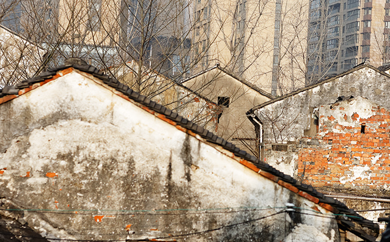
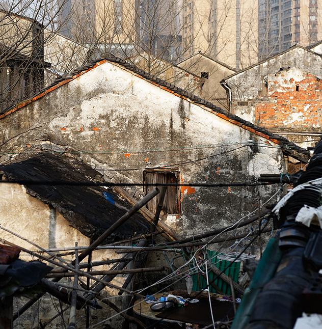
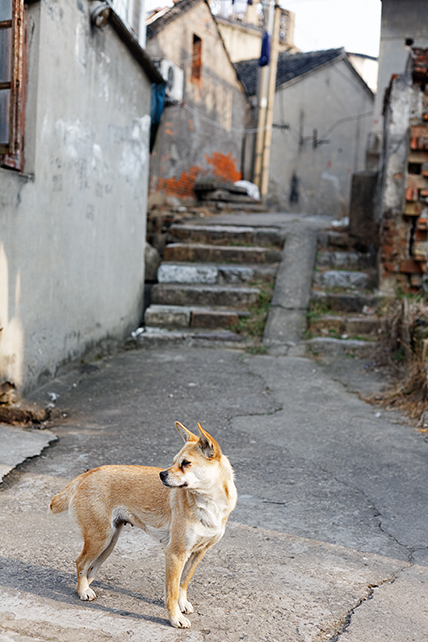
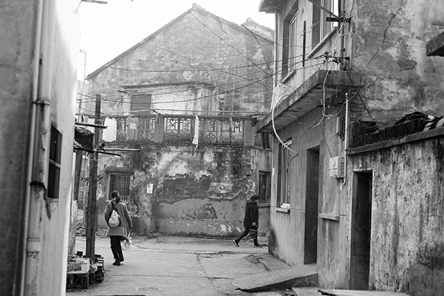
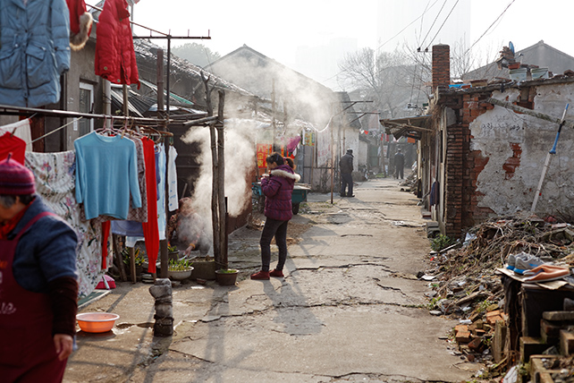
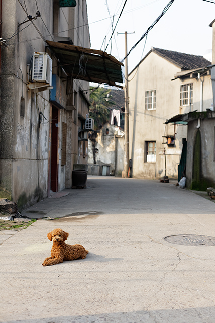
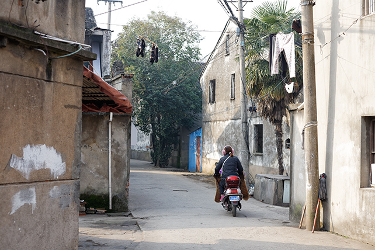
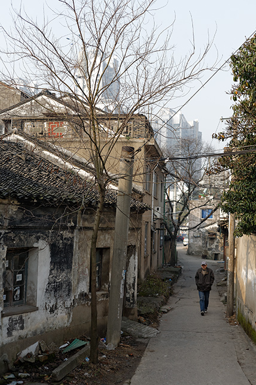
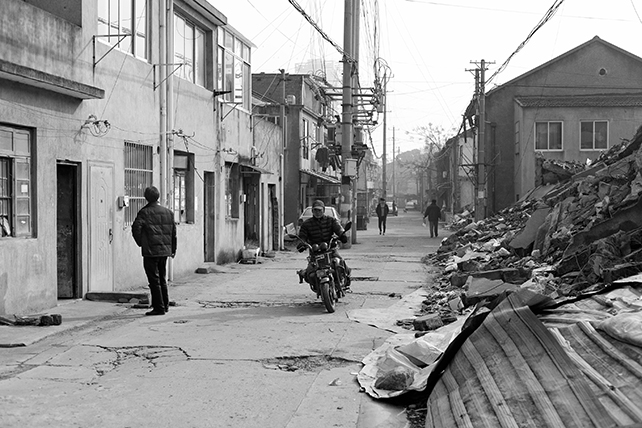
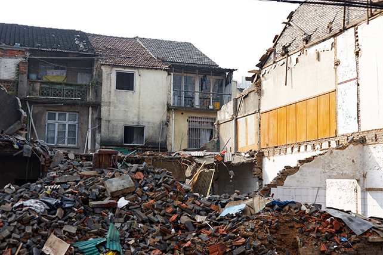
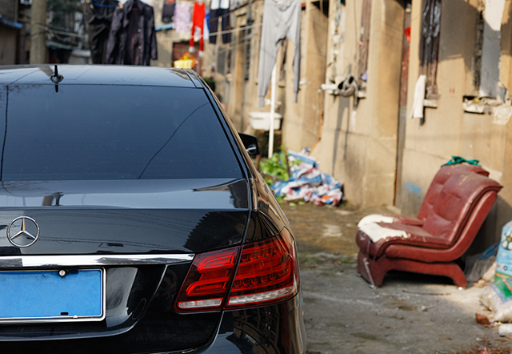
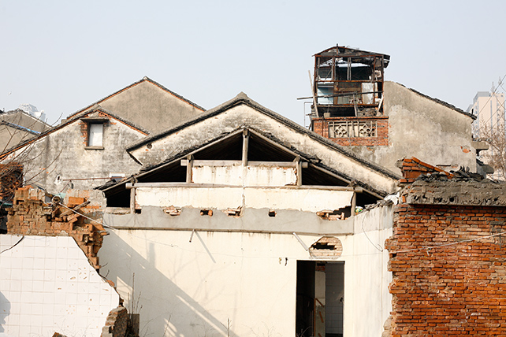
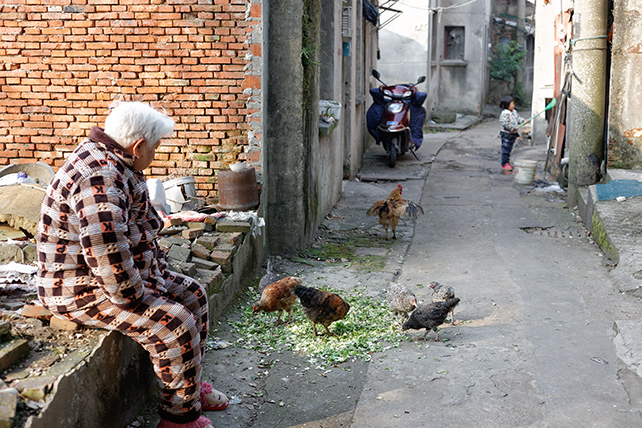
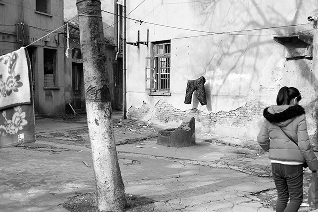
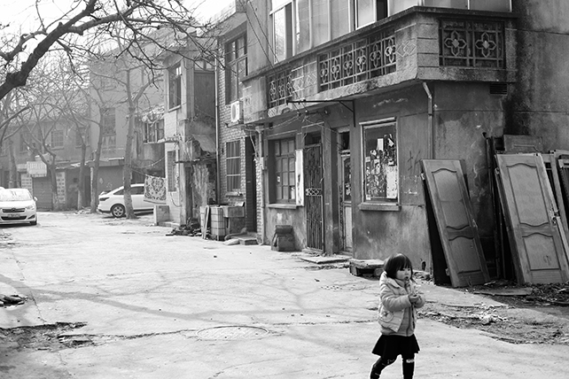
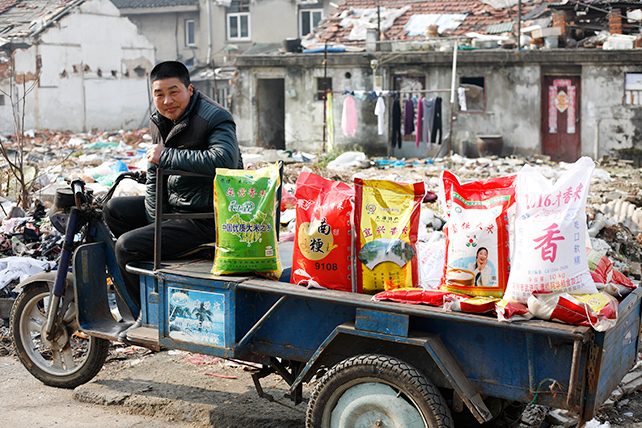